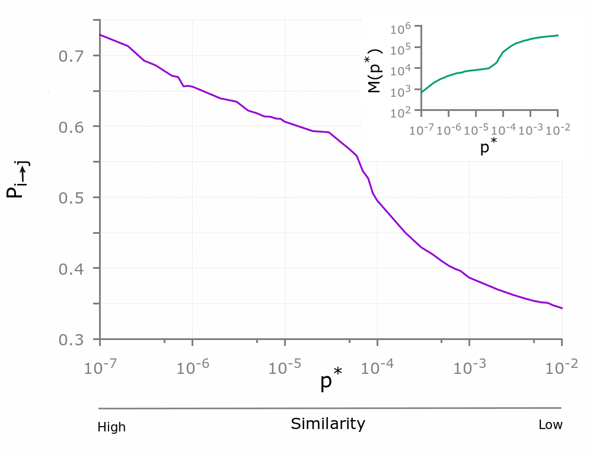
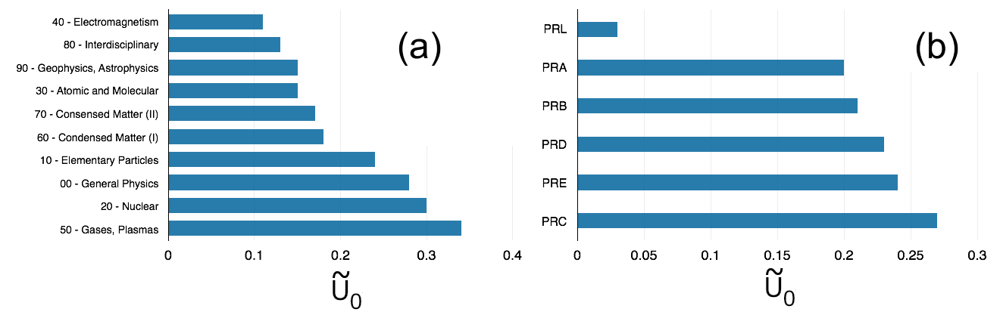

Since the seminal work by Derek de Solla Price on the distribution of citations received by scientific articles, citation networks have been widely used to study the evolution of science through the lenses of the underlying patterns of knowledge flows among academic papers, authors, research sub-fields, and scientific journals. In this paper, we focus on citation networks to cast light on the salience of homophily, namely the principle that similarity breeds connection, for knowledge transfer between papers. To this end, we assess the degree to which citations tend to occur between papers that are concerned with seemingly related topics or research problems. Drawing on, and extending, the so-called Statistically Validated Network (SVN) approach to the case of directed unipartite graphs, here we propose a novel method for measuring similarity between papers through the statistical validation of the overlap between their bibliographies.
The hypothesis underlying our method is that, if two papers are concerned with related aspects of the same discipline or research problem, then their bibliographies will exhibit a substantial overlap. We therefore assess the statistical significance of the overlap between the lists of references of two papers, and we then use the statistically validated overlap as a measure of the similarity between the two papers. Let us consider two sets of papers, A and B. The set A contains all the papers with more than zero outgoing citations, $$A = \{ i \in V | k_i^{out} \gt 0\}$$, while the set B contains all the papers that have received at least two citations, B = {i ∈ V | k i in > 1}. It is worth noticing that A ∩ B = ∅, i.e., the two sets may share some papers, since in general each paper cites and is cited by other papers. The method associates a statistical significance, namely a p-value, to the similarity between a pair of papers (i, j) in A by comparing the number of co-occurrences of citations in their reference lists against the null hypothesis of random co-occurrence of citations to one or more papers in B. In this way, the method allows us to identify pairs of papers in A characterised by overlaps between citations to elements in B which are statistically different from those expected in the null model.
Drawing on a large data set of articles published in the journals of the American Physical Society (APS) between 1893 and 2009, we compute a p-value for each pair of articles. We then set a significance threshold p* and validate all the pairs of articles that are associated with a p-value smaller than the threshold p* . Given a value p* of the statistical threshold, only the validated pairs of articles are considered similar at that significance level. For each value of the statistical threshold p* , we then compute the number of pairs of articles M(p) validated at that threshold in the APS citation network, and the number K(p) of existing citations between those validated pairs. We define the probability P_{i→j}(p) that a citation between any two articles whose similarity is validated at the threshold p exists as K(p*).

The obtained values of P_{i→j}(p) are reported in Fig. 1 as a function of p . The plot clearly suggests that the probability of finding a citation between two articles characterised by a highly statistically significant overlap between the respective reference lists (i.e., the similarity between that pair of articles is validated at a small value of p*) is higher than the probability of finding a citation between articles whose reference lists are only moderately significantly similar. The identification of a statistically significant similarity between two articles can also be used to uncover potentially missing references. To this end, here we focus on pairs of articles characterised by high degrees of similarity; if a citation between them is missing, we regard the lack of a directed link as a signature of a relevant yet unrecorded flow of knowledge in the network.
By uncovering pairs of published articles with missing citations, we then rank the APS journals and topics according to the incidence of missing data on knowledge flows. The lack of knowledge flows within a journal or a sub-field at a certain confidence level p* can be quantified by the fraction of missing links:
In general, the lower the value of U(p), the more likely it is that a citation occurs between a pair of articles characterised by a similarity validated at the statistical threshold p . Different journals in the APS and different sub-fields in physics could, in principle, be characterised by different profiles of U(p), namely by different propensities to obstruct knowledge flows between similar academic articles. A comparative assessment of journals and sub-fields according to their typical ability to facilitate the dissemination of knowledge would, of course, be based on P_{i→j}(p). Moreover, the ranking will in general depend on the chosen value of the statistical threshold p* . From a theoretical point of view, a suitable approach to the ranking would be to compute the quantity:
namely the limiting value of U(p) when we let the statistical threshold p go to zero. However, because this quantity cannot be computed accurately for a finite network, we employ a simple workaround. Specifically, we consider the tangent at the curve U(p) at the smallest value of p for which the number of validated pairs is still large enough for the construction of a network of a reasonable size (we found that 10−7 is an appropriate choice in our case), and we compute the intercept at which this tangent crosses the vertical axis (p*= 0).

Fig. 2 a-b shows the ranking induced by , respectively for the ten high-level families of classification codes included in the Physics and Astronomy Classification Scheme (PACS) (panel a) and for the journals published by the APS (panel b). It is worth noticing that Electromagnetism and Interdisciplinary Physics are the two sub-fields with the smallest percentage of missing links, i.e., those in which knowledge flows effectively among articles (and authors), as would be expected if the occurrence of citations were driven by overlaps between topics or research problems. Interestingly, the rate of occurrence of missing citations in Physical Review C (p=0.27) is almost nine times as large as the one observed in Physical Review Letters ( p=0.03), which is the APS journal with the widest visibility and largest impact.
Our method has important implications for the analysis not only of published articles, but also of newly posted preprints on online archives, or of manuscripts submitted to scientific journals. Specifically, the implementation of a recommendation procedure based on statistically significant overlaps between bibliographies can be used to suggest interesting work and relevant literature that could, in principle, be included in the bibliography of recently posted or submitted preprints. As we witness a continuously increasing production of preprints and publication of new articles, it has become particularly difficult for authors to keep abreast of scientific developments and relevant works related to the domain of interest. As a result, lack of knowledge of prior or current related work and missing relevant citations may occur quite often. The method presented in this paper can help the scientific community precisely to address this problem. In particular, it can be used not only by authors to integrate the bibliographies of their work, but also by editors of scientific journals to uncover missing citations and identify the appropriate reviewers for the papers they are considering for publication.